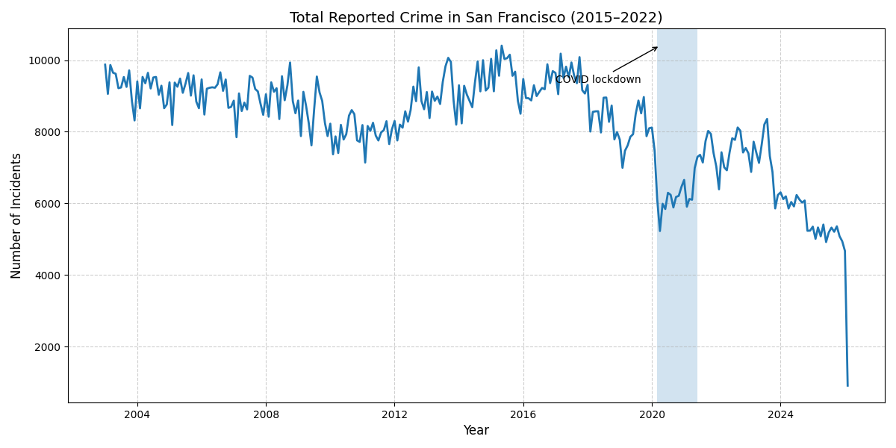

In early 2020, San Francisco — like much of the world — came to a sudden halt. Streets emptied, businesses closed, and everyday routines disappeared almost overnight. Using police incident data from 2015 to 2022, this short data story explores how these changes affected crime patterns in the city.
Rather than asking whether crime simply increased or decreased, the goal is to understand how it shifted — over time, across locations, and between different types of crime.
---
Figure 1: Monthly number of reported crimes in San Francisco from 2015 to 2022. The shaded area marks the COVID-19 lockdown period beginning in March 2020.
The decline in early 2020 is immediate and noticeable. As movement across the city decreased, so did the number of reported incidents. This suggests that many crimes are closely tied to everyday activity — fewer people in public spaces likely means fewer opportunities for certain offenses.
At the same time, it is important to be cautious. A drop in reported crime does not necessarily mean a true drop in criminal behavior. Changes in policing, reporting, or public priorities during the pandemic may also play a role.
---Figure 2: Heatmap of crime locations in San Francisco. The map highlights areas with higher concentrations of reported incidents.
Crime remains concentrated in specific areas of the city, even during periods of reduced activity. This suggests that underlying geographic patterns — such as density, infrastructure, and economic activity — continue to shape where incidents occur.
However, the map alone cannot explain why these patterns exist. It reflects reported incidents, which may be influenced by both actual crime and how resources are allocated across districts.
---Figure 3: Trends for the most common crime categories over time. The interactive plot allows comparison across different types of incidents.
Different types of crime respond differently to changes in society. Theft, for example, shows a clear decline during lockdown, likely due to reduced public interaction. Other categories appear more stable, suggesting they are less dependent on crowded environments.
This highlights an important point: crime data reflects both behavior and opportunity. When opportunities change — as they did during COVID — patterns shift accordingly.
---The pandemic did not simply reduce crime — it reshaped it. As San Francisco gradually reopened, crime levels began to rise again, reinforcing the connection between urban activity and reported incidents.
At the same time, these findings should be interpreted carefully. Crime data is influenced by many factors beyond actual behavior, including reporting practices and policing strategies. Understanding these limitations is essential when using data to draw conclusions or inform decisions.
---